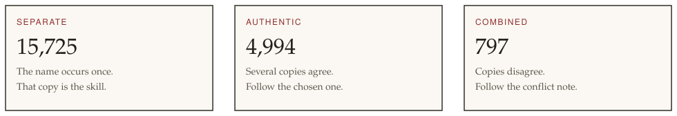
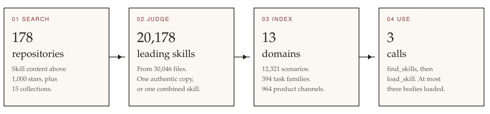

A comprehensive library of agent skills
21,516 skills, one search away.
SkillLib gathers public repositories of Claude-compatible and Codex-compatible skills, resolves overlapping names, and gives an agent three calls: find a skill, load its procedure, and keep the rest of the library out of the prompt.
One name, one skill to follow
The starting catalog is every skill-content repository with more than 1,000 GitHub stars, indexed on 16 October 2026. Specifications, skill SDKs, and agent products are left out. Fifteen curated collections point at the repositories they name.
Copies that share a name are judged together. The library keeps a single leading skill: the only copy, the authentic copy, or a combined skill whose conflict note records the disagreement. The other 8,902 copies stay available as variants and are not offered as peers.


Three calls. That is the integration.
from skilllib import find_skills, load_skill
found = find_skills("Run GSEA on a ranked gene list")
card = found["cards"][0]
skill = load_skill(card["id"])The same actions are shell commands. No third-party packages. Python 3.11 or newer.
python -m skilllib find "Run GSEA on a ranked gene list"
python -m skilllib load combined::gseafind_skills
Pass the user’s task. Receive up to five cards: name, description, when to use it, when not to, and the repository it came from.
load_skill
Pass a card id. Receive the skill text. If the skill names scripts that are not checked out, the reply says which repository to visit.
render_prompt
A short standing prompt: one sentence per domain, an instruction to search before giving up, and a cap of three loaded skills.
It sits in front of the agent’s own skill tools
Hermes, Claude, and Codex already load an installed skill by name. Hermes calls that skill_view. That list is the right size for the skills on one machine. It is the wrong size for 21,516 skills.
SkillLib chooses which skill is worth installing. The host then opens that skill with its own loader, including references and scripts. load_skill can show the cached procedure before the install exists. It does not replace skill_view, slash commands, or editing a skill in place.
A product name wins
964 product channels, such as a Gmail or Benchling skill, outrank a loose word match. On a 40-task check, 36 tasks returned the expected skill.
Related skills stay linked
87 skills require another skill, 235 name an alternative, and 112 say what follows. A two-step task can come back as a pair.
The library can grow
add owner/name merges one repository. update judges only the names that changed. Rebuild families later, when you decide the shelves need it.
MIT, for this code
Use the search library in your own agent. Skill texts collected from other repositories keep the license recorded for each source.
Thirteen shelves
Every leading skill has one domain and one scenario. Research is the largest shelf. Documents is the smallest. An agent can pass a domain into find_skills and search only that shelf.
Beneath the domains are 13,320 scenarios and 389 task families. Open the local shelf with python -m skilllib browse, then html/index.html.